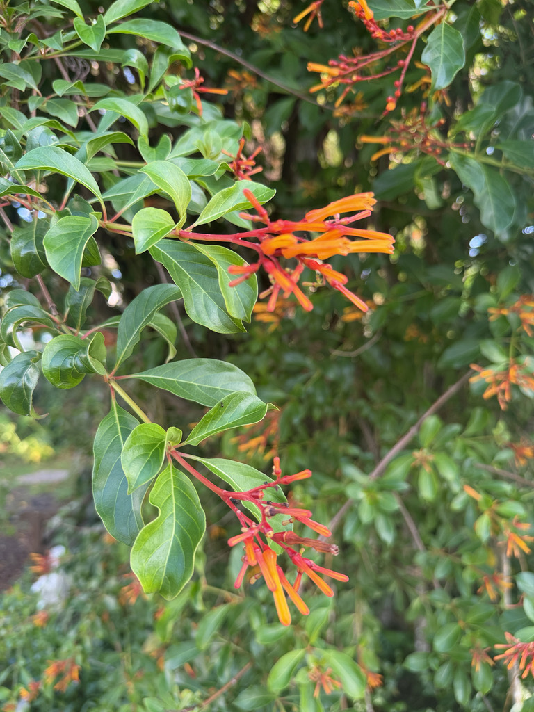

- Firebush is one of the most important native plants in South Florida for wildlife — hummingbirds, butterflies, and more than two dozen bird species use it for nectar, fruit, or cover through the entire year.
- It blooms and fruits simultaneously, making it a multi-function wildlife station.
- Seminole people used the plant medicinally, applying crushed leaves to skin irritations.
- It grows fast, tolerates drought, and in frost-free areas becomes a sizeable shrub — one of the first recommendations any Florida naturalist makes for a wildlife-friendly yard.
Native to the American subtropics and tropics, with the widest range of any plant in its genus — from central Florida south through the Keys, the West Indies, and Mexico, all the way to Argentina. It belongs to the coffee family (Rubiaceae). The genus name Hamelia honors the 18th-century French botanist Henri-Louis Duhamel du Monceau, and patens means "spreading," for its open, spreading branches.
The true Florida native is Hamelia patens var. patens. In Belize it carries the Mayan name Ix Canaan, "Guardian of the Forest."
- For all its value, firebush comes wrapped in a cautionary tale that Florida native-plant lovers call “The Hamelia Mess.” Most “firebush” sold in garden centers is not the native at all but a look-alike, Hamelia patens var. glabra, marketed as “African,” “Dwarf,” or “Compacta” firebush.
- It has smoother leaves and paler, more yellow-orange flowers, and it can interbreed with and genetically swamp wild native populations. So this unassuming shrub is both a beloved native wildlife powerhouse and a real lesson in why knowing exactly which plant you are planting matters.
- Gardeners who want a more compact plant without the genetic risk can choose ‘Calusa,’ a true-native cultivar selected to stay small — the recommended alternative to the non-native dwarf forms.
Firebush is among the very best wildlife plants Florida offers. Its near-constant orange-red tubular flowers are perfectly shaped for the bills of ruby-throated hummingbirds, while zebra longwings — Florida's state butterfly — gulf fritillaries, and sulphurs work the blooms throughout the day.
The berries, ripening from green to red to purple-black, are eaten by mockingbirds, gray catbirds, and other songbirds. Because the native form blooms and fruits nearly year-round in warm weather, a single plant feeds both pollinators and birds across every season — one of the hardest-working natives in the garden.
Clusters of narrow red-orange tubular flowers, spring through fall — nearly year-round in frost-free spots.
Berries ripen through green, red, and finally purple-black, often at several stages on the same cluster.
Whorls of elliptical leaves with reddish veins and stalks. The native form is slightly fuzzy and often blushes red in cool weather.
Reproduces by seed (spread by the many birds that eat its berries) and is easily grown from cuttings.
Whorls of elliptical leaves with reddish veins, terminal clusters of slim orange-red trumpets, and strings of berries at several ripening stages on the same cluster.
The ripe berries are edible — juicy with a pleasant tang, if seedy — and have been fermented into a traditional drink in Mexico, though they matter far more as wildlife food.
It has no significant toxicity to people and isn't a concern for dogs. As with any wild plant, only eat fruit you've positively identified.


- © Greg Bratlee (CC-BY-NC), via iNaturalist
- © Randall Carter (CC-BY-NC), via iNaturalist
- © Ruby Meador (CC-BY-NC), via iNaturalist